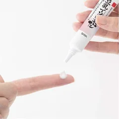

千円ちょっとで気軽に続けたい人

なめらか本舗
リンクルアイクリーム NA 豆乳イソフラボン 30g
30g
¥1,100税込・出典掲載価格
選び方と声
- 選ぶ条件：毎日続けられる値段で、軽い乾燥から始めたい人。商品ページの説明では、コクのある高保湿クリームが乾燥による小じわを目立たなくする（Amazon限定の大容量30g）。
- ガルや商品ページでは、刺激がなくべたつかず軽い乾燥に使いやすい、夜に塗ると翌朝ふっくらする、という声があった
気になる声気になる点：保湿されている間の話で、根本的に変わったわけではない、という声がある。プチプラに多くを求めすぎないこと。30gと量が多いので使い切れるか先に考える
販売価格・容量・送料はリンク先でご確認ください